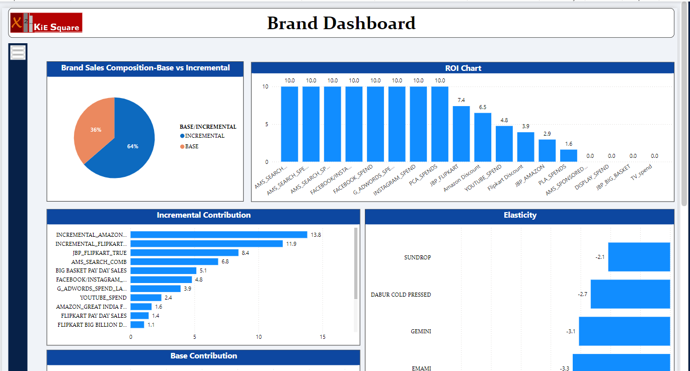

Spend Intelligence
In the race for digital dominance, standing still is not an option. Elevate your brand with our Tools and pave the way for lasting success.
01 Reporting Dashboards
Social Dashboard


Website Performance Dashboard


Ecom Organic Dashboard


Platform Comparison Dashboard


02 Multi Channel Attribution / MMM
01. The marketing mix modeling dashboards are designed to
provide a comprehensive analysis of brand performance across
various platforms. These dashboards present detailed
information on brand spend and volume across different
channels, enabling marketers to understand how their
investments correlate with outcomes. By visualizing the
data, users can easily track the impact of their marketing
activities and identify which platforms yield the highest
returns. This holistic view of spend allocation helps in
optimizing the marketing budget and making informed
decisions that drive better business outcomes.
02. In addition to spend and volume insights, the dashboards
include ROI charts that highlight the return on investment
for each marketing channel. These charts help users assess
the efficiency of their marketing strategies by showing
which channels deliver the most significant returns relative
to the investment made. Elasticity information is also
featured, providing insights into how changes in marketing
spend affect sales volume. Understanding these dynamics
allows brands to fine-tune their strategies and respond more
effectively to market conditions.

03. The dashboards also incorporate data on discounts and
volume, offering a clear view of how promotional activities
influence sales. By analyzing this data, marketers can
determine the optimal discount levels that maximize volume
without eroding profitability. Overall, these dashboards
serve as powerful tools for brands to assess and refine
their marketing mix, ensuring that their strategies are both
effective and efficient in driving growth.
03 Simulator - Spend & Sales Forecast Tool - Brochure
In a world where financial precision drives success, let the Simulator guide your path. Optimize your spend and sales forecasts with confidence and precision.
Product Overview
Achieving financial excellence requires more than just
guesswork; it demands strategic foresight and accurate data.
Introducing the Simulator, a powerful forecasting tool built
on the robust PowerBI platform. Designed to deliver accurate
spend and sales forecasts, the Simulator uses a predefined
model to analyze conditions such as event and non-event
months. By leveraging historical data, the Simulator provides
insightful projections, helping you make well-informed budget
decisions and optimize your spending across various platforms.
Unlock the full potential of your budget. Use the Simulator to achieve precise forecasts and strategic financial planning.
Advanced Forecasting:

Data-Driven Projections:

Why Choose the Simulator?

The Simulator is more than a forecasting tool; it's your
partner in strategic financial planning. By integrating
historical data with advanced forecasting techniques, it
provides you with accurate, actionable insights to optimize
your budget and enhance ROI across platforms.
Forecast effectively, plan strategically—leverage the Simulator to navigate your financial journey with precision.
04 SOV Tool
Core Vs Non Core Paid SOV

05 Campaign Optimization Tool
Our Campaign Optimization Tool is a suite of PPC
(pay-per-click) management tools designed to optimize digital
advertising campaigns across platforms like Google Ads and
Microsoft Ads. It offers a range of features including
automated rule-based bidding, data-driven budget management,
and ad performance tracking. The platform enables advertisers
to streamline campaign management through custom scripts,
reporting, and alerts, ensuring that ad spend is efficiently
allocated and performance is maximized. The tool empowers
marketers to achieve better results with less manual effort by
leveraging automation and actionable insights.
The platform's tools for A/B testing, keyword management, and
bid optimization ensure campaigns are always performing at
their peak. With its intuitive interface, users can easily
customize workflows and leverage powerful data visualizations
to understand trends and make informed decisions.
×